| 행 | 시나리오(C열) | H 결과 | I 코멘트 = 문제 · 제안 · 레시피 |
|---|---|---|---|
| 5 | 신규 회원 첫 저장 H5 · I5 | 개선 필요 | 문제저장한 뒤에도 하단 버튼 글자가 [저장] 그대로이고 배경색만 바뀝니다(11·17행 원본 상세도 같음). 제안저장되면 버튼을 [저장됨] + 채운 북마크 아이콘(오렌지, 가이드 「저장 켠 상태」)으로 바꿔 주세요. 누르면 지금처럼 컬렉션 시트가 열리면 됩니다. 레시피 → https://d1nmxpjaa8tlrm.cloudfront.net/recipes/616 저장을 누르면 버튼이 [저장] 그대로 내가 본 화면(시트에 안 들어감)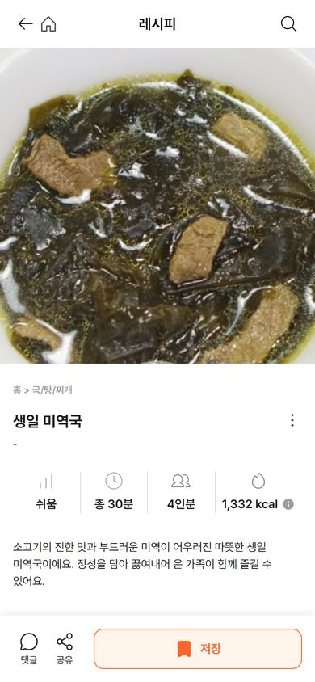 |
| 6 | 저장 → 기존·새 컬렉션 담기 | 이상 없음 | 코멘트 비움 |
| 7 | 저장 해제 → 목록·컬렉션에서 빠짐 H7 · I7 | 개선 필요 | 문제저장 해제 확인 팝업이 「저장을 해제할까요? · 해제하기」입니다(레몬트리 결정 문구는 「저장에서 빼기」). 제안버튼·메뉴 이름을 「저장에서 빼기」로 바꿔 주세요. 확인 팝업은 내가 고친 레시피일 때만 「고친 내용도 함께 지워져요」로 띄우고, 고치지 않은 레시피는 팝업 없이 빼고 알림에 [되돌리기]를 붙여 주세요. 내가 본 화면(시트에 안 들어감)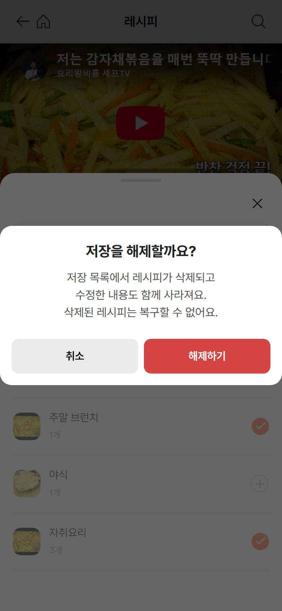 문제저장 목록 여러 개 고르기 버튼 이름이 [편집]입니다(레몬트리 결정은 [선택]). 제안[선택]으로 바꾸고, 고르면 하단에 「n개 저장에서 빼기」 버튼을 보여 주세요. 내가 본 화면(시트에 안 들어감)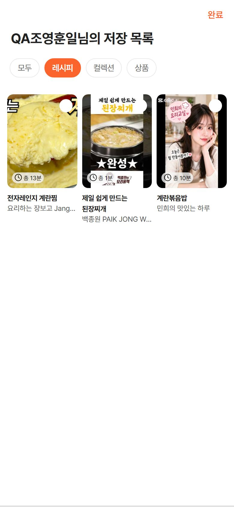 |
| 8 | 컬렉션 만들기 → 추가·빼기 → 삭제 H8 · I8 | 개선 필요 | 문제저장 목록 헤더의 「＋」(새 컬렉션)가 하단 「+」(레시피 만들기)와 모양이 같아 헷갈립니다. 제안헤더는 아이콘 대신 「+ 새 컬렉션」 글자 버튼(오렌지 글자 14px 이상)으로 바꿔 주세요. 내가 본 화면(시트에 안 들어감)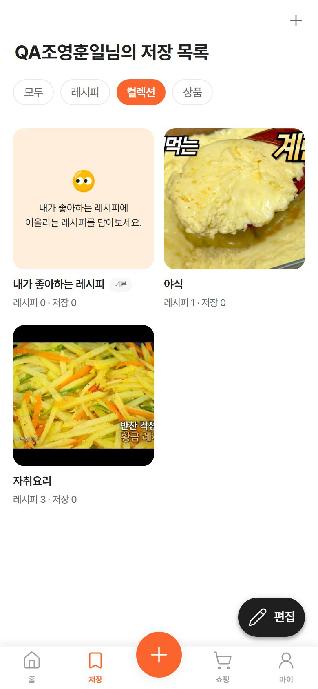 문제컬렉션에서 빼는 동작 이름이 「삭제」이고 확인 팝업이 뜹니다. 레시피는 저장 목록에 그대로 남습니다. 제안이름을 「이 컬렉션에서 빼기」로 바꾸고, 팝업 없이 바로 뺀 뒤 알림 「1개를 뺐어요 [되돌리기]」를 보여 주세요. 내가 본 화면(시트에 안 들어감)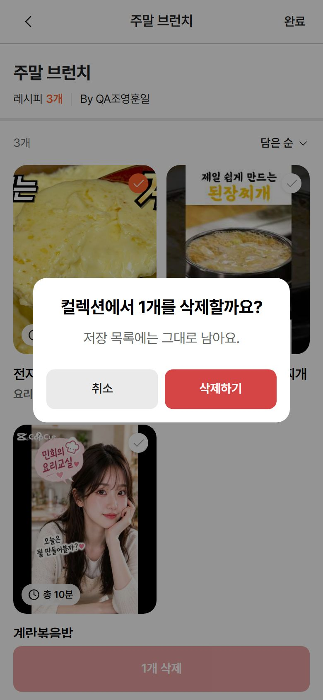 문제컬렉션 삭제 알림만 「컬렉션을 삭제했습니다.」(~습니다·마침표)입니다. 서버 응답 문구를 그대로 띄우는 것으로 보입니다. 제안알림 문구는 앱에서 정해 「컬렉션을 삭제했어요」(마침표 없음)로 맞춰 주세요. 내가 본 화면(시트에 안 들어감)문제레시피 고르기 화면이 만들 때는 목록형, 추가할 때는 격자형으로 다릅니다. 제안둘 다 목록형(사진·제목·채널·요리시간 + 오른쪽 체크)으로 맞춰 주세요. 제목이 다 보여 고르기 쉽습니다. 내가 본 화면(시트에 안 들어감)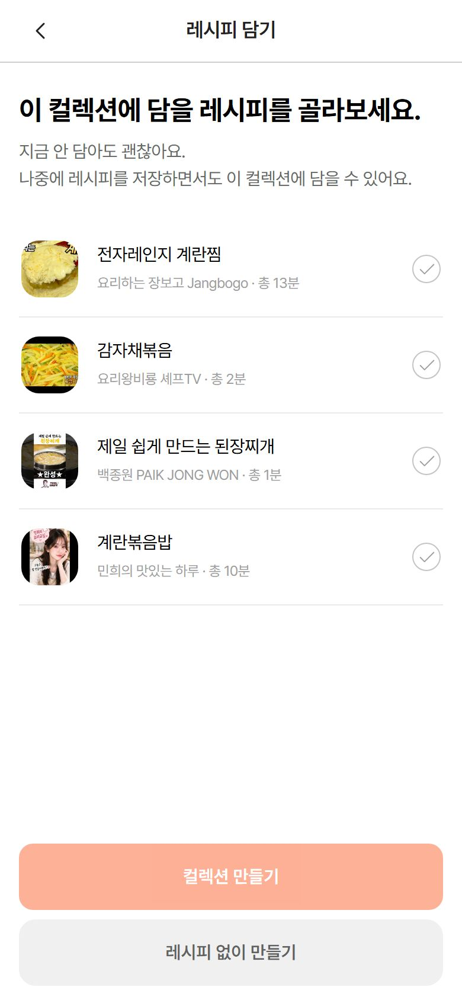 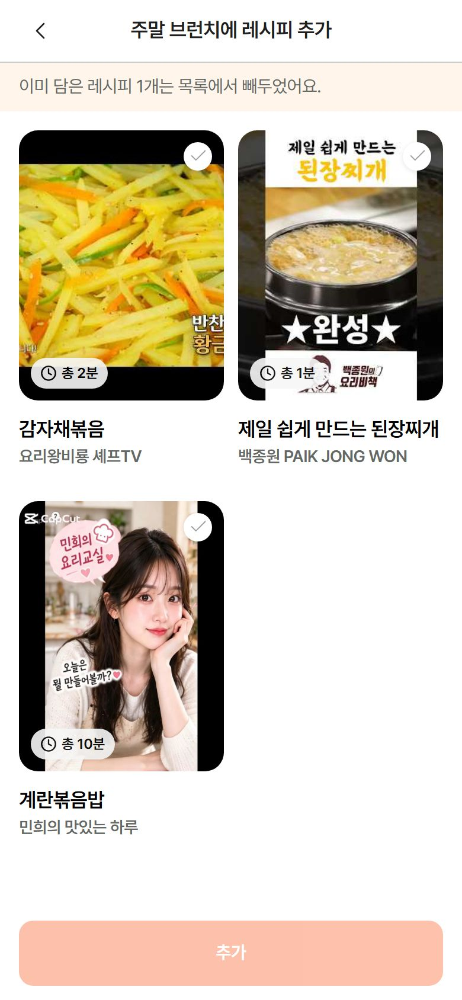 문제레시피를 1개 이상 고른 상태에서도 [레시피 없이 만들기]가 보이고, 누르면 고른 것이 사라집니다. 제안1개 이상 고르면 [레시피 없이 만들기]를 숨기고, 주 버튼을 「n개 담아 만들기」로 바꿔 주세요. 내가 본 화면(시트에 안 들어감)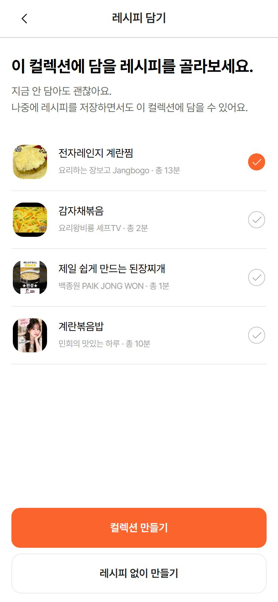 |
| 9 | 다른 회원 컬렉션 → 저장·취소·재저장 H9 · I9 | 문의 사항 | 문제컬렉션 만든 사람이 「By 139496464」처럼 회원번호로 보입니다. 제안47행과 같은 원인입니다. 이름을 못 가져올 때도 회원번호 대신 「졸리팟 회원」으로, 가져오면 표시 이름 규칙(버그 시트 No 6)대로 보여 주세요. 내가 본 화면(시트에 안 들어감)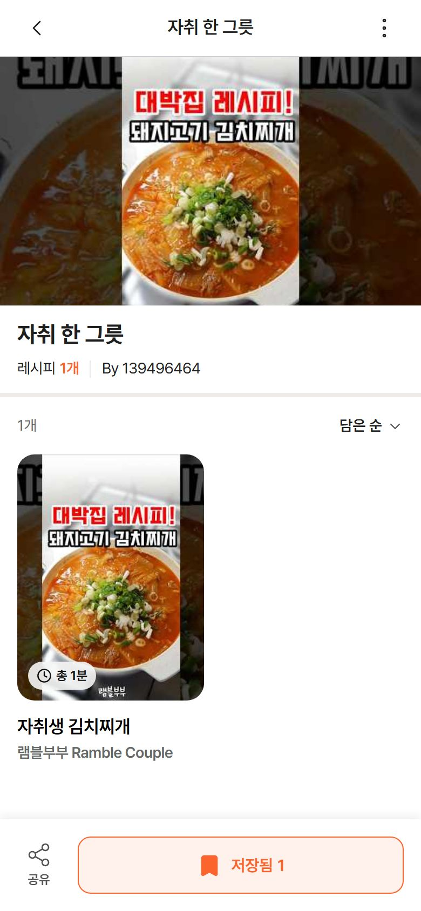 문제검색 결과가 없을 때 뜨는 「이 컬렉션은 어떠세요?」에 다른 회원의 빈·시험용 컬렉션이 실명·회원번호와 함께 나오고, 카드 레시피 수가 모두 「레시피 0」입니다(옛 조회 경로 /api/shop/recipe/collections/public-search 사용). 제안새 조회 경로로 바꿔 실제 레시피 수를 보여 주고, 레시피 1개 이상인 공개 컬렉션만 추천해 주세요. 만든 사람은 표시 이름 규칙(버그 시트 No 6)대로 보여 주세요. 내가 본 화면(시트에 안 들어감)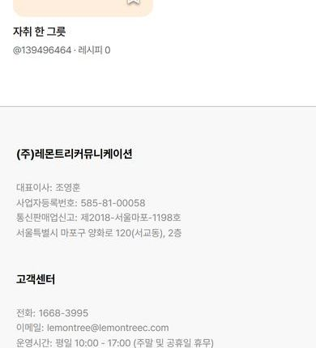 문제삭제된 컬렉션 링크를 열면 「Not Found」(영어)만 보입니다. 제안「삭제된 컬렉션이에요 · 만든 분이 컬렉션을 지웠어요」와 [홈으로] 버튼이 있는 화면으로 바꿔 주세요. 내가 본 화면(시트에 안 들어감)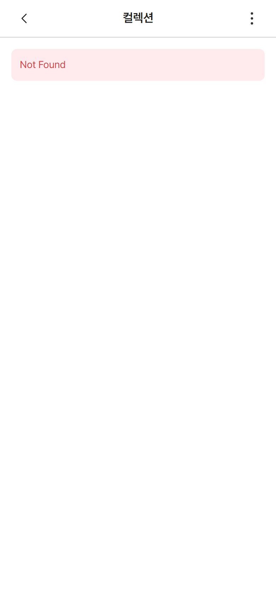 |
| 10 | 레시피 상세 핵심 기능 H10 · I10 | 개선 필요 | 문제출처 줄이 「○○ 영상을 AI가 정리했어요 · 원본 보기 ↗」라 어디로 가는지 알 수 없습니다(시나리오 「YouTube에서 보기 ↗」). 제안「김대석 셰프TV · YouTube에서 보기 ↗」 / 「○○ · Instagram에서 보기 ↗」처럼 채널명 + 이동할 곳으로 바꿔 주세요. 레시피 → https://d1nmxpjaa8tlrm.cloudfront.net/recipes/754 출처 줄 「…원본 보기 ↗」 내가 본 화면(시트에 안 들어감)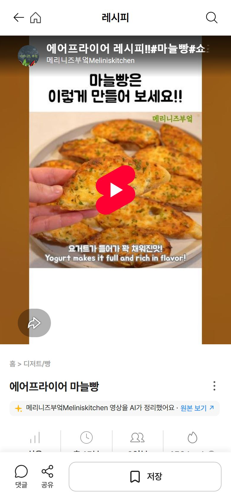 문제퍼가기 금지 영상은 영상 칸에 「불러오지 못했어요 · 네트워크 상태를 확인해 주세요」가 뜹니다. 원인이 네트워크가 아닙니다. 제안「이 영상은 졸리팟에서 재생할 수 없어요」 + [YouTube에서 보기] 버튼으로 바꿔 주세요. 링크로 만들 때 퍼가기 허용 여부를 저장해 두면 처음부터 이 화면을 보여 줄 수 있습니다. 레시피 → https://d1nmxpjaa8tlrm.cloudfront.net/recipes/859 영상 칸 「네트워크 상태를 확인해 주세요」 내가 본 화면(시트에 안 들어감)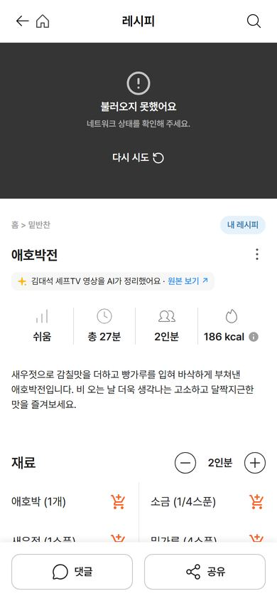 문제추천 카드 요리시간이 「-」·「총 1분」인 레시피가 많습니다. 원본 144개를 모두 보니 요리시간 「1분」 33개·빈칸 36개, 칼로리 빈칸 79개·1인분 60kcal 미만 14개(「0 kcal」 포함), 재료 양 빈칸 13개입니다. 제안① AI 정리 결과에 검사 규칙을 넣어 주세요: 요리시간 2분 이하·빈칸, 1인분 60kcal 미만·빈칸이면 「확인 필요」로 표시하고 관리자 목록에서 걸러 볼 수 있게 ② 요리시간은 영상 길이·단계 수로 다시 추정 ③ 기존 원본 144개는 한 번 다시 정리 ④ 값을 모르면 카드·상세에서 「-」·「1분」 대신 칩을 숨기기. 레시피 → https://d1nmxpjaa8tlrm.cloudfront.net/recipes/392 「총 1분」 레시피 → https://d1nmxpjaa8tlrm.cloudfront.net/recipes/144 「0 kcal」 내가 본 화면(시트에 안 들어감)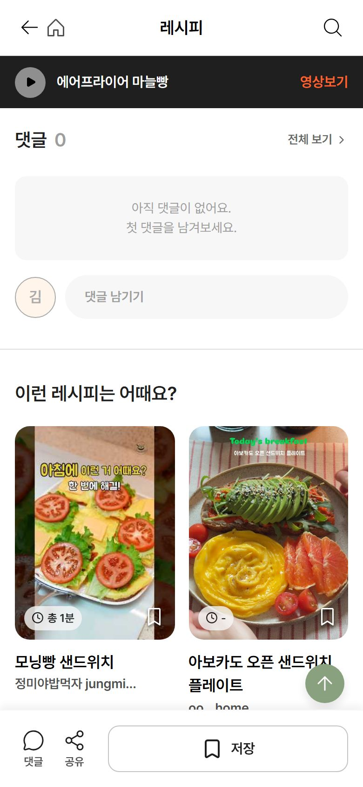 |
| 11 | 여는 곳에 따라 원본/내 레시피 · 숨김·삭제 차단 | 이상 없음 | 코멘트 비움 |
| 12 | 링크 레시피 편집 → 내 것만 바뀜 H12 · I12 | 개선 필요 | 문제칼로리가 필수 입력인데, 손대지 않아도 저장하면 다시 계산돼 바뀝니다(23 → 191). 칼로리가 비면 [다음]도 잠기고, 1인분 기준인지 표시도 없습니다. 제안칼로리 입력 칸을 없애고, 재료로 계산한 값을 「약 191kcal · 1인분 · 재료로 계산」처럼 읽기 전용으로 보여 주세요. 회원 편집·직접 만들기·관리자 모두 같게 해 주세요. 필수가 아니게 되니 잠김도 함께 풀립니다. 내가 본 화면(시트에 안 들어감)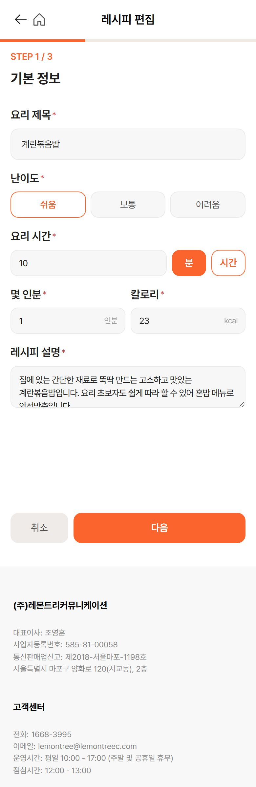 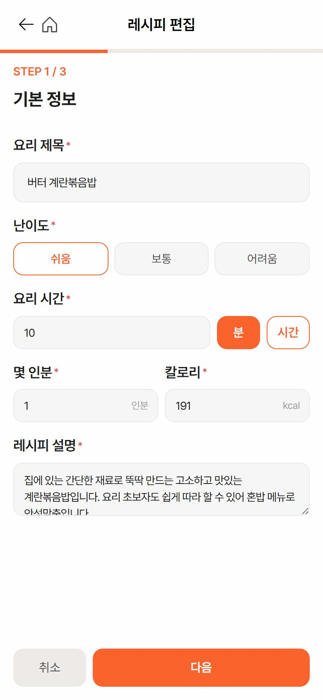 문제재료 양이 빈 줄이 하나라도 있으면 [다음]이 안내 없이 잠깁니다. 양 칸 회색 예시 「200g」이 값처럼 보입니다. 코드상 모든 재료가 「이름 1~20자 · 양 1~10자」여야 [다음]이 켜집니다(재현: test2 계정 저장 목록 「계란볶음밥」 → 편집 → 2단계, 5번째 「식용유」 양 빈칸). 제안① 양은 선택으로(검사 조건에서 양 필수 제거, 비면 상세에 이름만 — 원본 계란볶음밥(594)의 「식용유」처럼 이미 표시됨) ② 예시 「200g」→「양 (선택)」 ③ 양 칸을 누르면 「약간·조금·적당량·1큰술·1작은술·1개」 칩 ④ [다음]은 잠그지 말고, 막아야 할 때(이름 빈칸·20자 초과)만 그 칸으로 이동해 빨간 테두리와 이유 표시 ⑤ AI는 찾은 양만 채우고 못 찾으면 비워 두기. 내가 본 화면(시트에 안 들어감)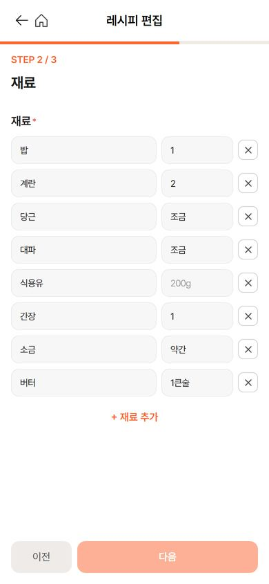 문제저장 중 표시가 없습니다. 사진이 든 편집은 6초 넘게 버튼 색만 흐립니다. 제안누르는 즉시 버튼을 「저장 중…」 + 작은 로딩 표시로 바꾸고 다시 못 누르게 해 주세요. 실패하면 「저장하지 못했어요 · 다시 시도」를 보여 주세요. 내가 본 화면(시트에 안 들어감)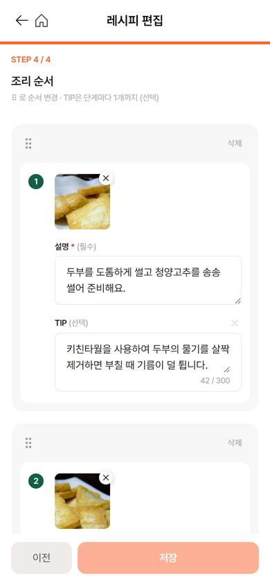 |
| 13 | 직접 올린 레시피 편집(4단계) | 이상 없음 | 코멘트 비움 |
| 14 | 링크로 레시피 만들기 → 정리 완료 H14 · I14 | 개선 필요 | 문제「저장완료! 분석은 2~3분 걸리니 완료되면 알려드릴게요:)」·「완료되면 알려드릴게요 :)」라고 안내하지만, 앱 알림은 없고 저장 목록 카드가 「정리 중 → 분석완료!」로 바뀌는 것뿐입니다. 제안레몬트리가 정한 문구 「다 되면 저장 목록에 나타나요」로 두 곳 모두 바꿔 주세요. 내가 본 화면(시트에 안 들어감)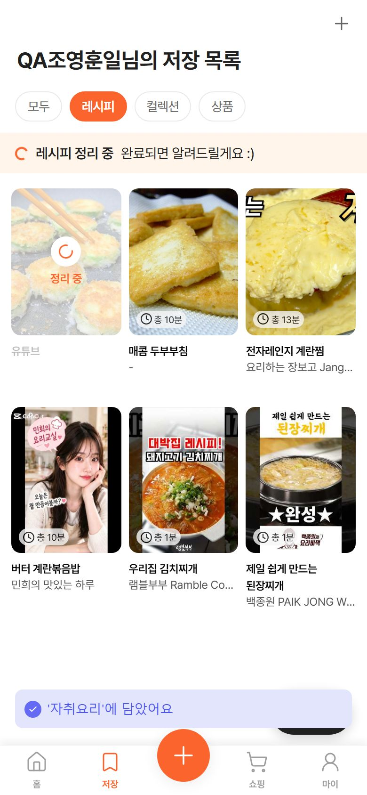 문제퍼가기 금지 영상은 상세 영상 칸에 「네트워크 상태를 확인해 주세요」가 뜹니다. 제안10행 2번과 같습니다. 레시피 → https://d1nmxpjaa8tlrm.cloudfront.net/recipes/859 영상 칸 오류 문구 문제관리자 레시피 정보의 원본 행 회원명이 「회원명 없음」입니다. 제안47행과 같은 원인(회원 조회 설정)입니다. 관리자 화면은 실명과 회원번호를 함께 보여 주면 됩니다. 내가 본 화면(시트에 안 들어감)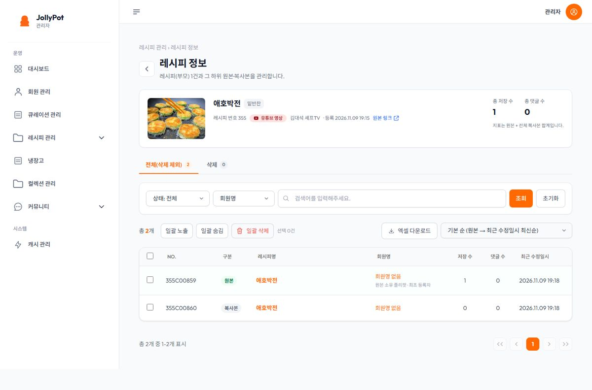 |
| 15 | 등록 불가 링크 · 이미 있는 링크 H15 · I15 | 개선 필요 | 문제같은 링크를 또 넣으면 「이미 내 레시피에 저장된 영상이에요. 스크랩북에서 확인해주세요.」가 뜹니다. 「스크랩북」은 옛 이름입니다. 제안「이미 저장한 영상이에요」 + [저장 목록에서 보기] 버튼으로 바꿔 주세요. 내가 본 화면(시트에 안 들어감)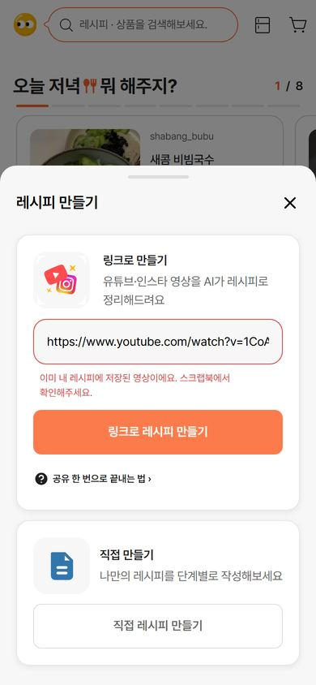 문제요리시간이 「총 120분」「총 360분」처럼 분으로만 보입니다. 제안60분부터는 「1시간 30분」·「6시간」처럼 시간 단위로 보여 주세요. 카드 칩도 같은 규칙입니다. 레시피 → https://d1nmxpjaa8tlrm.cloudfront.net/recipes/144 「총 120분」 내가 본 화면(시트에 안 들어감)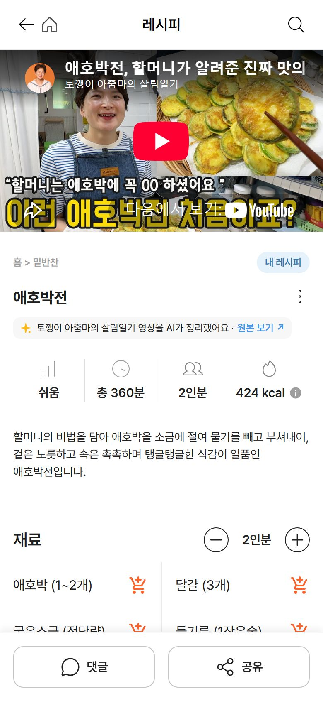 |
| 16 | 정리 실패 → 다른 링크 / 직접 만들기 | 이상 없음 | 코멘트 비움 |
| 17 | 직접 만들기 → 올리기 H17 · I17 | 문제 발견 | 문제AI가 채운 재료 8개 모두 양이 비어 있고, 양을 다 넣기 전에는 [다음]이 안내 없이 잠깁니다. 제안12행 2번과 같습니다. 그리고 AI는 영상·사진에서 찾은 양만 채우고, 못 찾으면 비워 두면 됩니다. 내가 본 화면(시트에 안 들어감)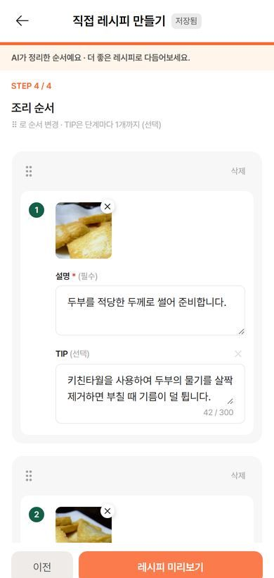 문제직접 만든 레시피의 저장 목록 카드 출처가 「내가 만든 레시피」가 아니라 「-」입니다. 상세 작성자도 「-」입니다. 제안직접 만든 레시피는 출처를 「내가 만든 레시피」로 보여 주세요. 작성자는 표시 이름 규칙(버그 시트 No 6)을 따르고, 이름을 못 가져와도 「-」 대신 「나」로 보여 주세요. 레시피 → https://d1nmxpjaa8tlrm.cloudfront.net/recipes/427 직접 등록 레시피 작성자 「-」 내가 본 화면(시트에 안 들어감)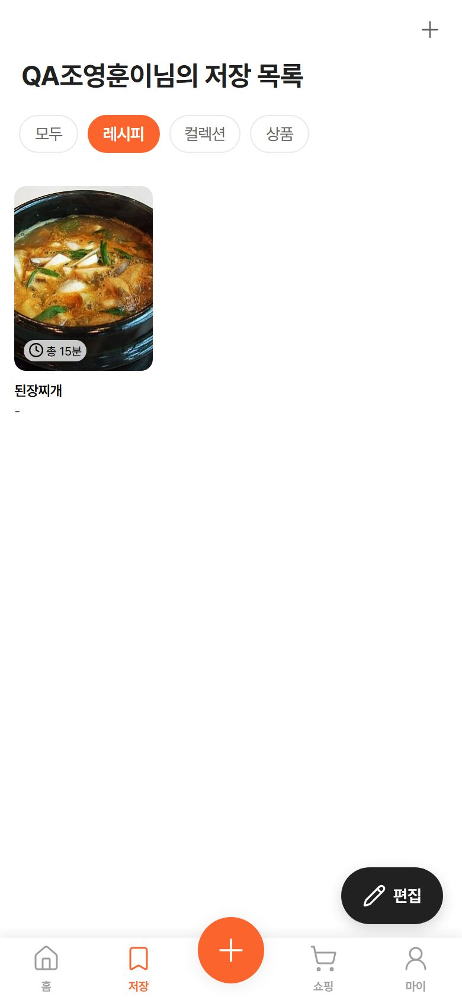 문제2단계에서 본 칼로리(156kcal)가 올린 뒤 347kcal로 바뀝니다. 제안12행 1번과 같습니다. 2단계부터 재료로 계산한 값을 읽기 전용으로 보여 주면 올린 뒤에도 같은 숫자가 됩니다. 내가 본 화면(시트에 안 들어감)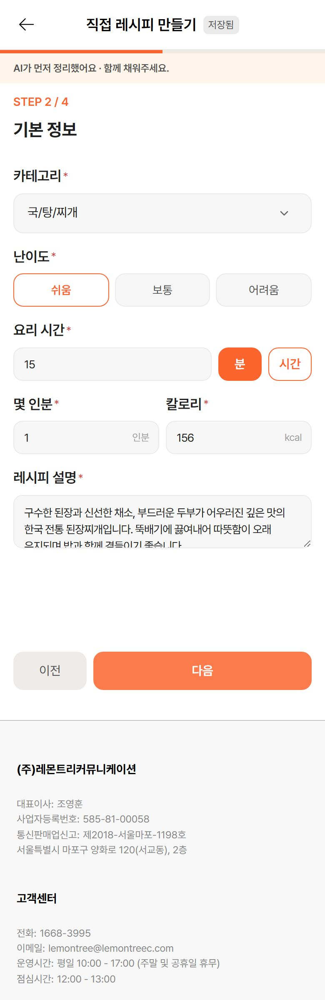 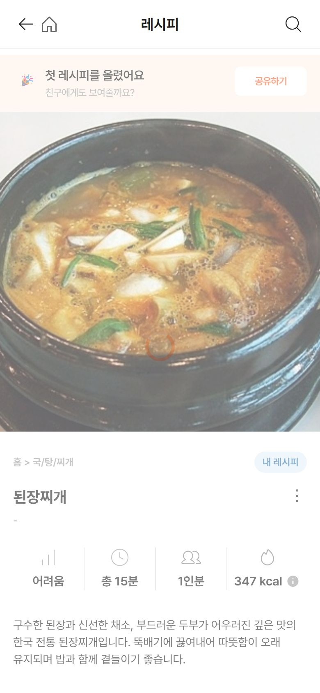 |
| 18 | 임시 저장 → 이어서/새로 작성 H18 · I18 | 개선 필요 | 문제이어서 작성 후 [이전]으로 1단계까지 돌아갔다 나가면 안내가 「1단계 사진과 제목까지 작성」으로 내려갑니다. 제안안내는 지금 있는 단계가 아니라 「가장 멀리 간 단계」로 보여 주세요(예: 「3단계 재료까지 작성」). 내가 본 화면(시트에 안 들어감)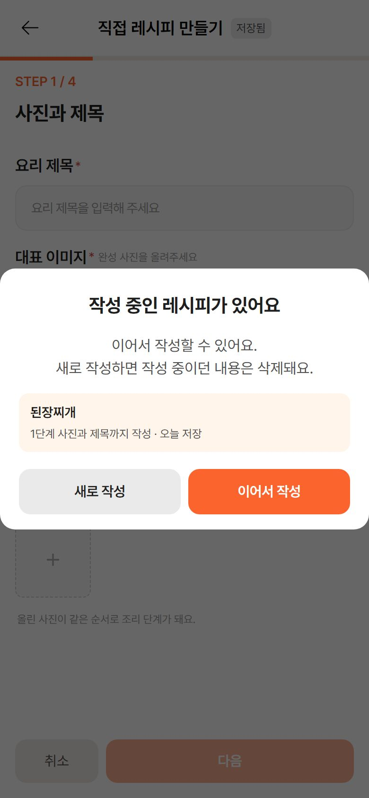 문제아무것도 쓰지 않은 새 양식에도 헤더에 「저장됨」 배지가 보입니다. 레시피 저장의 「저장됨」과 말이 겹칩니다. 제안입력이 하나라도 생긴 뒤에만 「임시 저장됨」으로 보여 주세요. 내가 본 화면(시트에 안 들어감)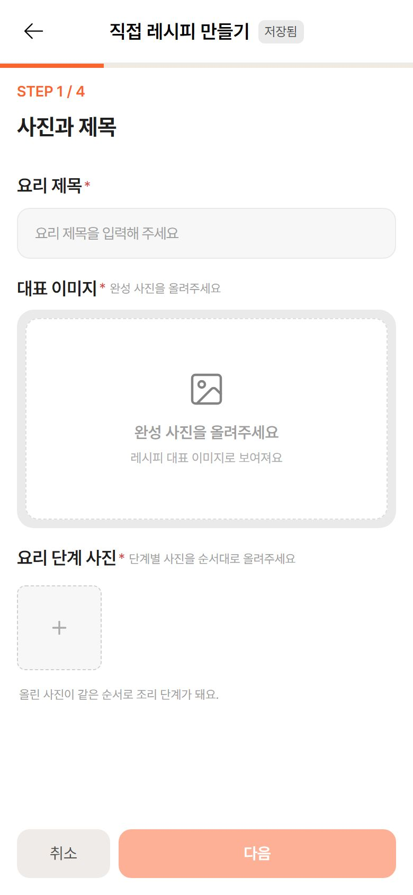 |
| 19 | 댓글·답글 → 관리자 반영 → 내 댓글 삭제 H19 · I19 | 문제 발견 | 문제모든 댓글 작성자가 「-」, 답글 멘션이 「@-」로 보입니다(관리자 작성자 칸도 「-」). 제안47행과 같은 원인입니다. 고칠 때 실명이 그대로 나가지 않도록 표시 이름 규칙(버그 시트 No 6)을 함께 적용해 주세요. 레시피 → https://d1nmxpjaa8tlrm.cloudfront.net/recipes/616 댓글 작성자 「-」·「@-」 내가 본 화면(시트에 안 들어감)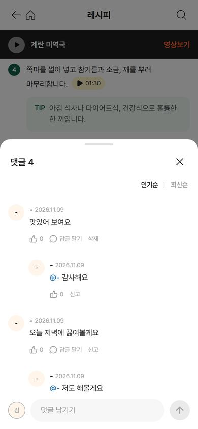 |
| 20 | 관리자 댓글 숨김·노출·삭제 | 이상 없음 | 코멘트 비움 |
| 21 | 레시피 신고 → 대상 숨김 | 이상 없음 | 코멘트 비움 |
| 22 | 댓글 신고 → 블랙리스트 → 대상 삭제 H22 · I22 | 문제 발견 | 문제블랙리스트 [등록]을 누르면 「회원 상태를 확인할 수 없어 운영 표시를 변경할 수 없습니다.」가 뜨고 등록되지 않습니다. 제안47행과 같은 원인(회원 조회 설정)입니다. 고친 뒤 다시 확인하겠습니다. 내가 본 화면(시트에 안 들어감)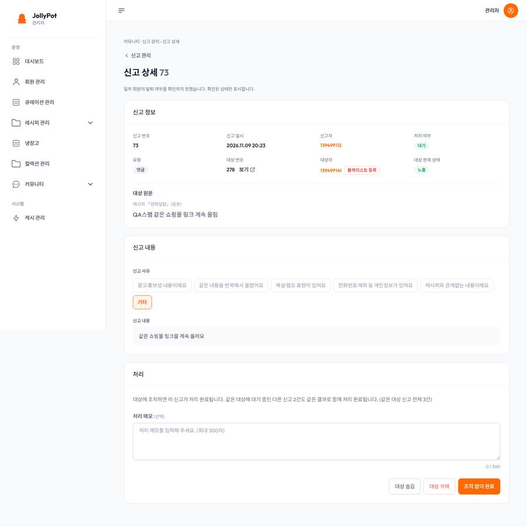 문제회원 관리 목록이 열리지 않아 블랙리스트 조회도 할 수 없습니다. 제안47행과 같은 원인입니다. 내가 본 화면(시트에 안 들어감)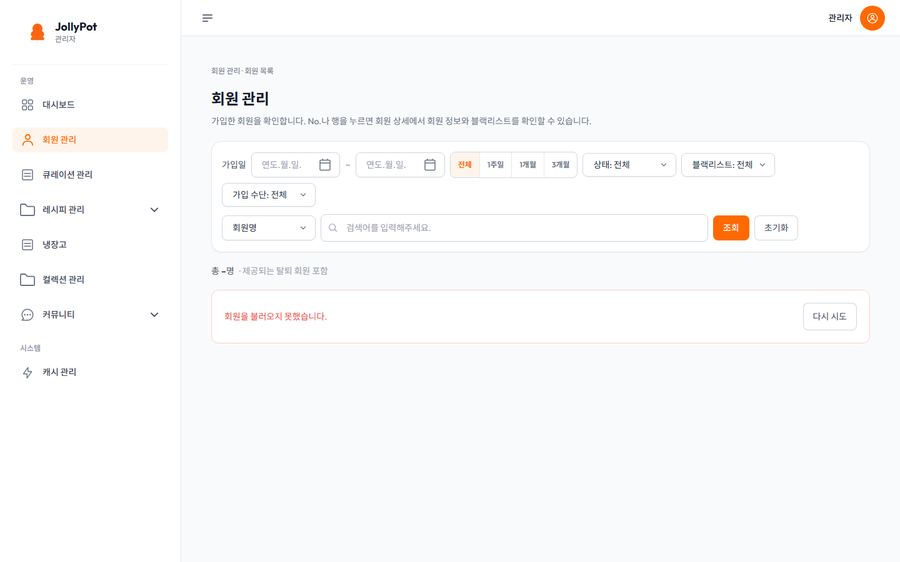 |
| 23 | 재료 사진으로 담기 → 추천 저장 H23 · I23 | 문의 사항 | 문제[문의] 흐리게 만든 대파도 「확인 필요」로 빠지지 않고 양파·달걀과 함께 체크됩니다. 제안흐린 재료를 가르는 기준이 있는지 알려 주세요. 기준이 없다면, AI 확신이 낮은 재료는 체크하지 않은 「확인 필요」로 내려 주세요(시나리오 23행 2번). 내가 본 화면(시트에 안 들어감)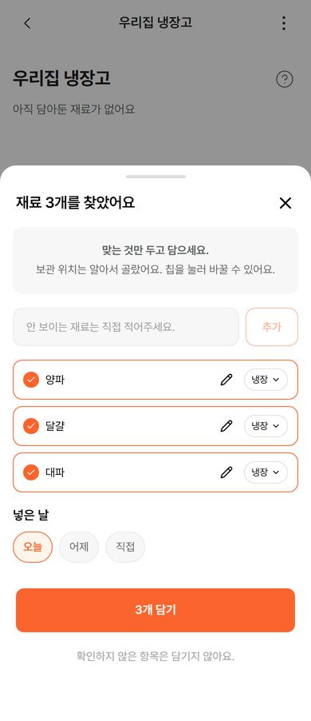 문제[문의] 추천이 「저장 많은 순」이 아닙니다(저장 3인 레시피가 12번째). 겹치는 재료 수 순서로 보입니다. 제안의도한 정렬인지 알려 주세요. 겹치는 재료 수 순서가 더 쓸모 있으니 유지하고, 시나리오와 안내 문구를 「내 재료가 많이 들어가는 순」으로 맞추는 것을 권합니다. 내가 본 화면(시트에 안 들어감)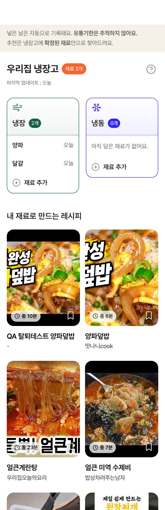 |
| 24 | 영수증 사진 → 비식품 제외 · 줄임말 확인 H24 · I24 | 개선 필요 | 문제영수증 상품명이 재료 이름으로 정리되지 않습니다(「국산콩두부」 그대로, 「서울우유 1L → 서울우유?」, 「양반 김」). 그래서 두부가 있어도 두부 레시피가 0개 추천되고, 「두부」를 직접 넣으면 4개가 나옵니다. 제안영수증을 읽을 때 상품명을 표준 재료 이름으로 정리해 담아 주세요(「국산콩두부」→「두부」, 「서울우유 1L」→「우유」). 원래 상품명은 작은 글자로 함께 보여 주면 됩니다(「두부 · 국산콩두부」). 표준 이름은 재료 사전(버그 시트 No 8)을 같이 씁니다. 내가 본 화면(시트에 안 들어감)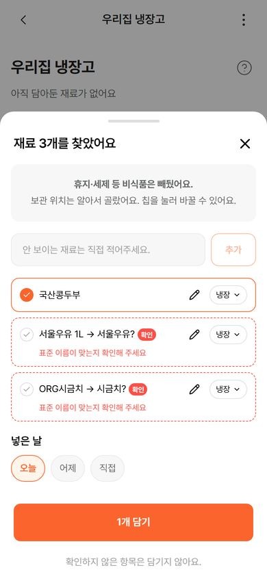 |
| 25 | 직접 재료 추가 · 같은 재료 · 넣은 날 · 다 썼어요 | 이상 없음 | 코멘트 비움 |
| 26 | 사진에서 재료 못 찾음 → 다른 사진 / 직접 추가 | 이상 없음 | 코멘트 비움 |
| 27 | 냉장고 칸 설정 | 이상 없음 | 코멘트 비움 |
| 28 | 관리자 냉장고 관리 → 사용자 반영 | 이상 없음 | 코멘트 비움 |
| 29 | 전체 비우기 · 관리자 초기화 | 이상 없음 | 코멘트 비움 |
| 30 | 검색 결과 태그 필터 | 이상 없음 | 코멘트 비움 |
| 31 | 관리자 태그 추가 → 검색 필터 반영 | 이상 없음 | 코멘트 비움 |
| 32 | 링크 대량 등록 → 수집 큐 → 발행 H32 · I32 | 개선 필요 | 문제적재 확인 창의 발행 예정 시각(11/11 오전 10:00·10:30)과 실제 큐 예약 시각(11/11 오후 12:00·12:30)이 2시간 다릅니다. 제안두 화면이 같은 계산을 쓰게 해 주세요. 확인 창에 보인 시각이 그대로 예약되어야 합니다. 어느 쪽이 맞는 규칙인지도 알려 주세요. 내가 본 화면(시트에 안 들어감)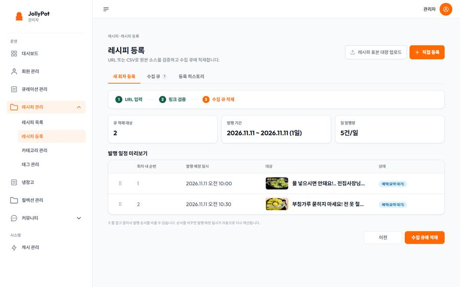 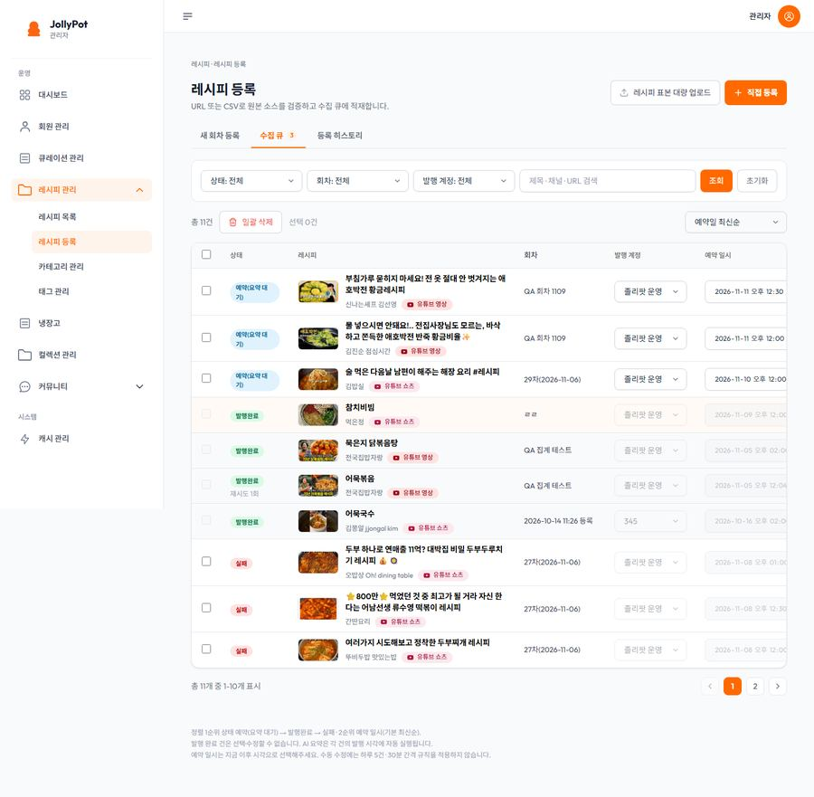 |
| 33 | 발행 실패 → 재시도 / 큐에서 삭제 H33 · I33 | 개선 필요 | 문제실패 사유 창에 「[AI_ERROR] 분석 중 오류가 발생했어요…」처럼 내부 코드가 그대로 보입니다. 제안코드는 숨기고 「AI 정리 중 오류가 났어요 · [재시도]하면 대부분 해결돼요」처럼 할 일을 함께 보여 주세요. 내가 본 화면(시트에 안 들어감)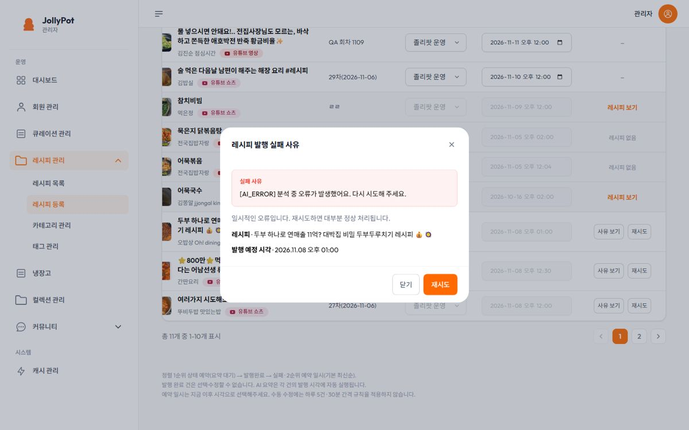 문제재시도가 끝나기까지 3분 넘게 걸리고, 결과 알림은 그 화면에 머물러 있어야 볼 수 있습니다. 제안누르는 즉시 행 상태를 「재시도 중」으로 바꾸고, 끝나면 목록이 스스로 「발행완료/실패」로 바뀌게 해 주세요. 다른 화면에 다녀와도 목록에서 결과를 알 수 있습니다. 내가 본 화면(시트에 안 들어감)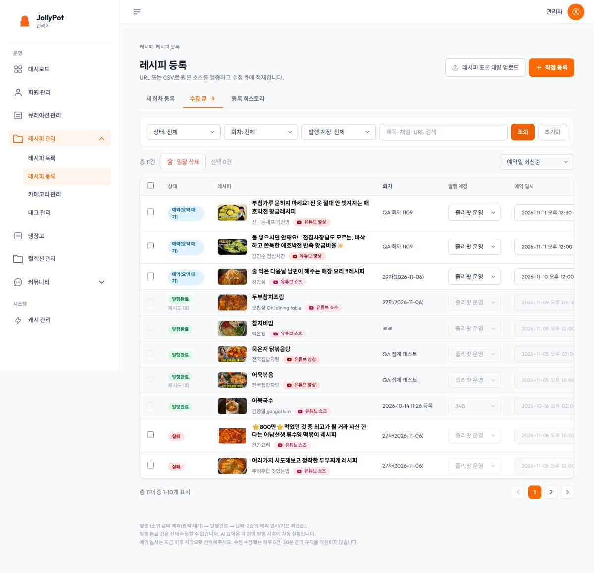 |
| 34 | 표본 엑셀 업로드 H34 · I34 | 개선 필요 | 문제검증이 파일을 올릴 때가 아니라 [표본 대량 등록]을 눌러야 이뤄집니다. 제안파일을 고르는 즉시 검사해 「등록 가능 n건 · 오류 n건」을 보여 주고, 오류가 0건일 때만 [표본 대량 등록]을 켜 주세요. 내가 본 화면(시트에 안 들어감)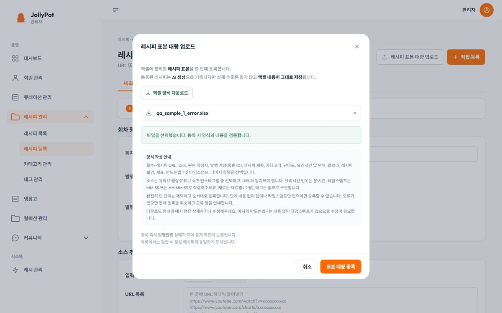 문제「발행 계정 (회원 ID)」 칸에 로그인 아이디를 넣으면 「숫자를 입력해주세요」로 반려됩니다. 제안칸 이름을 「발행 계정 (회원 번호)」로 바꾸고, 양식 예시 행에 실제 형식(예: 139499112)을 넣어 주세요. 내가 본 화면(시트에 안 들어감)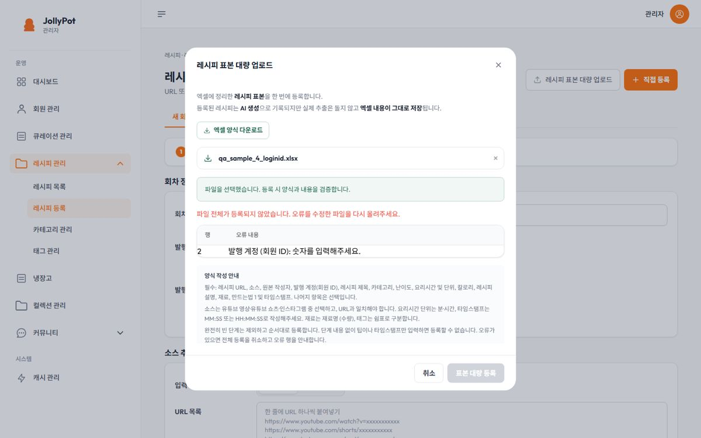 문제안내문은 「다운로드 양식의 예시 행은 삭제하거나 수정해주세요」인데, 받은 양식에는 예시 행이 없습니다(제목 줄 1줄뿐). 양식에 「몇 인분」 칸도 없어 엑셀로 올린 레시피는 인분이 비고, 그 때문에 관리자 원본 수정·회원 복사본 편집이 막힙니다. 제안양식에 「몇 인분」 칸(필수)과 필수 칸을 모두 채운 예시 1행을 넣어 주세요. 예시 행은 No 칸에 「예시」라고 적어 올릴 때 자동으로 빼 주세요. 내가 본 화면(시트에 안 들어감)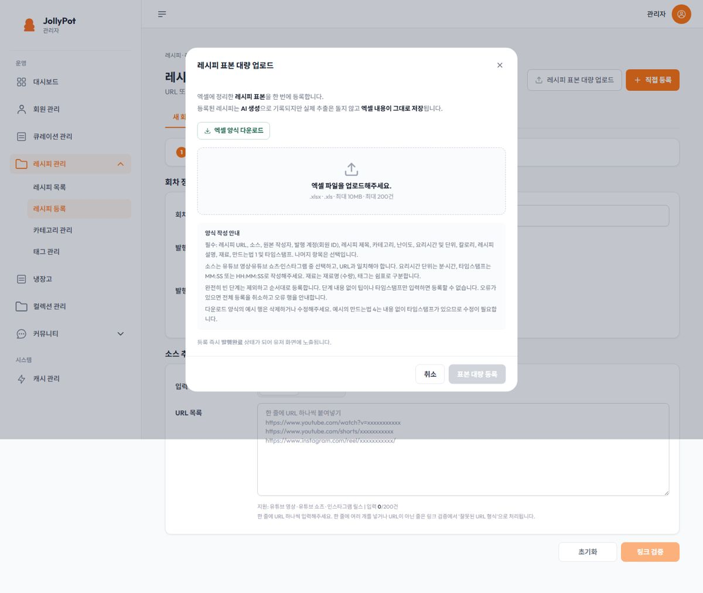 |
| 35 | 관리자 직접 등록(AI 초안·태그 자동) H35 · I35 | 개선 필요 | 문제5단계 태그가 6개 분류 중 2개(방법·종류)만 자동으로 붙습니다. 시나리오는 「분류마다 1개씩」입니다. 제안6개 분류마다 사전에서 가장 맞는 태그를 하나씩 골라 주세요. 맞는 태그가 없는 분류는 비워 두고 「맞는 태그 없음」으로 보여 주면 관리자가 바로 채울 수 있습니다. 내가 본 화면(시트에 안 들어감)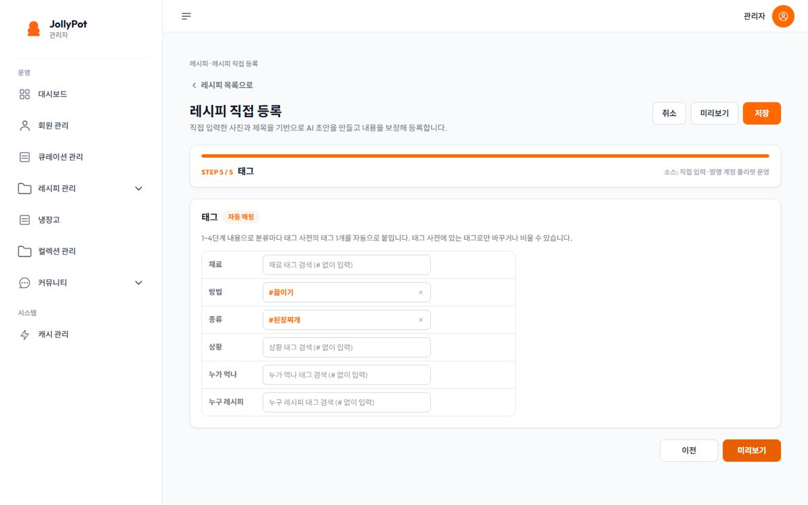 |
| 36 | 관리자 원본 수정 → 사용자 반영 · 최빈값 H36 · I36 | 문제 발견 | 문제관리자가 링크 원본 재료를 「애호박」→「주키니」로 바꾼 뒤, 회원 2명이 복사본(재료 「애호박」)을 고쳐 저장해도 원본이 「주키니」 그대로입니다(2회, 24분 뒤까지). 「최빈값으로 다시 바뀐다」가 일어나지 않습니다(39행 제목도 같음). 제안복사본이 저장될 때마다 그 원본의 칸별 최빈값을 바로 다시 계산해 주세요. 정기 작업이라면 주기를 알려 주시고, 관리자 원본 상세에 「최빈값 마지막 반영 시각」을 보여 주세요. 레시피 → https://d1nmxpjaa8tlrm.cloudfront.net/recipes/859 재료 「주키니」 그대로(복사본은 「애호박」) 내가 본 화면(시트에 안 들어감)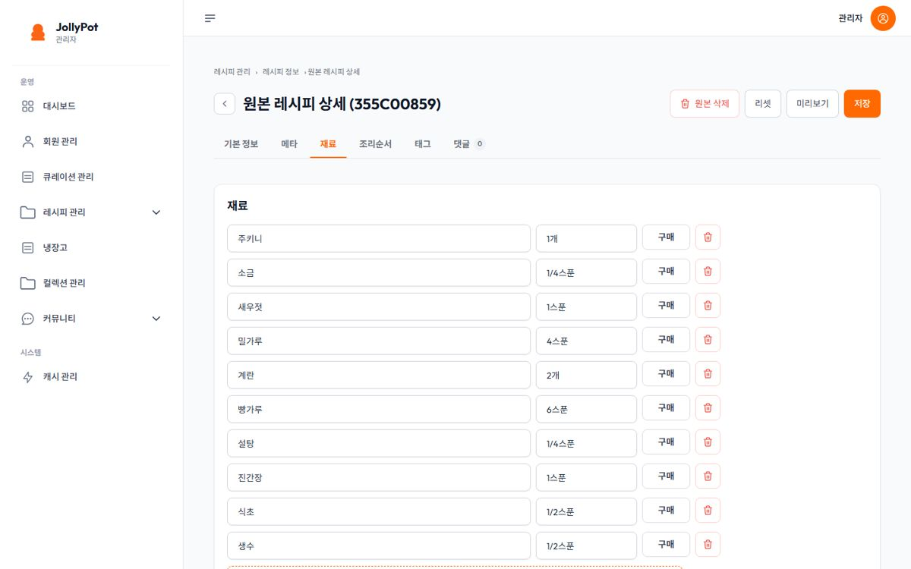 |
| 37 | 레시피 숨김 · 다시 노출 | 이상 없음 | 코멘트 비움 |
| 38 | 원본 삭제 → 삭제 탭 · 댓글 함께 삭제 | 이상 없음 | 코멘트 비움 |
| 39 | 저장 · 링크 재등록 · 복사본 수정 → 최빈값 H39 · I39 | 문제 발견 | 문제복사본 3개 중 2개 제목을 「새우 QA표본 애호박전」으로 바꿨지만, 17분이 지나도 원본 제목이 「QA표본 애호박전」 그대로입니다. 제안36행과 같습니다. 레시피 → https://d1nmxpjaa8tlrm.cloudfront.net/recipes/870 제목 「QA표본 애호박전」 그대로 내가 본 화면(시트에 안 들어감)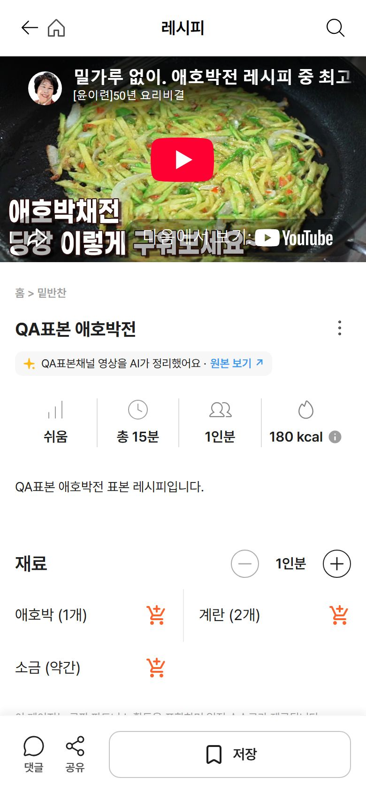 |
| 40 | 레시피 목록 태그 필터 → 엑셀 | 이상 없음 | 코멘트 비움 |
| 41 | 카테고리 순서 바꾸기 | 이상 없음 | 코멘트 비움 |
| 42 | 태그 추가 · 붙이기 · 이름 수정 · 삭제 | 이상 없음 | 코멘트 비움 |
| 43 | 후보 태그 승격 · 태그 이관 | 이상 없음 | 코멘트 비움 |
| 44 | 홈 섹션 만들기(수동) → 순서 · 숨김 · 삭제 | 이상 없음 | 코멘트 비움 |
| 45 | 자동 채움·하이브리드 섹션 | 이상 없음 | 코멘트 비움 |
| 46 | 히어로 데크 편성 | 이상 없음 | 코멘트 비움 |
| 47 | 회원 조회 → 상세 → 수정 · 탈퇴 회원 H47 · I47 | 문제 발견 | 문제회원 관리 목록이 「회원을 불러오지 못했습니다」로 열리지 않습니다. 서버가 「회원 조회 파트너 설정이 없습니다.」(503)로 답합니다. 같은 원인으로 대시보드 회원 숫자(48행), 블랙리스트 등록(22행), 다른 회원 이름 표시(댓글 「-」·「@-」, 컬렉션 「By 139496464」, 관리자 「회원명 없음」)가 모두 안 됩니다. 제안개발·운영 서버 모두 샵바이 회원 조회 파트너 설정을 연결해 주세요. 레몬트리가 샵바이에서 해야 할 설정이 있으면 알려 주세요. 연결 전이라도 이름이 없으면 「-」·회원번호 대신 「졸리팟 회원」으로 보여 주세요. 연결 뒤 이름을 보여 줄 때는 표시 이름 규칙(버그 시트 No 6)을 먼저 적용해 주세요. 레시피 → https://d1nmxpjaa8tlrm.cloudfront.net/recipes/616 댓글 작성자 「-」(같은 원인) |
| 48 | 가입·레시피 등록 → 대시보드 H48 · I48 | 문제 발견 | 문제회원 카드(전체 회원·오늘 신규 가입·리텐션)가 모두 「–」이고 「회원 가입 추이」는 「데이터를 불러오지 못했습니다」입니다. 제안47행과 같은 원인(회원 조회 설정)입니다. 47행 제안대로 고쳐 주세요. 내가 본 화면(시트에 안 들어감)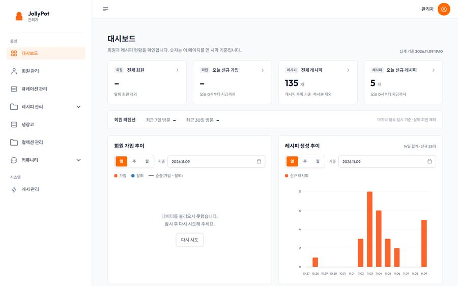 |
순서는 상→중→하, 상태는 모두 「요청」입니다. 행별 [복사]는 B~G만 복사하니 그 행의 B칸에 붙이세요.
| 행 | No | 화면 · 우선순위 · 1차 피드백(문제 · 제안) · 예시(레시피 주소) |
|---|---|---|
| 3 | 1 | 상 관리자 원본 레시피 수정 문제칼로리가 빈 레시피(원본 144개 중 79개)는 관리자가 원본을 고칠 때 어떤 탭을 고쳐도 [저장]이 안내 없이 비활성입니다. 제안칼로리를 필수에서 빼고 재료로 계산한 값을 읽기 전용으로 보여 주세요(통합 시나리오 12행 1번과 같은 안). 그래도 막아야 하는 칸이 있으면 [저장]을 누를 때 그 칸으로 이동해 이유를 보여 주세요. 내가 본 화면(시트에 안 들어감)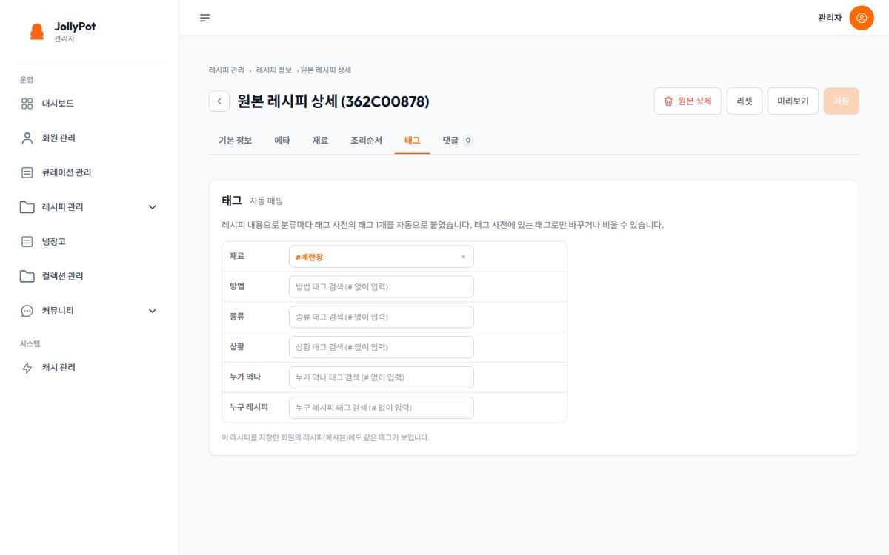 |
| 4 | 2 | 상 옛 공개 조회 경로(레시피·컬렉션·댓글) 문제로그인하지 않아도 옛 조회 경로가 회원 정보를 돌려줍니다. 레시피 목록(/api/shop/recipe/public-search) 227개 모두에 회원번호, 회원 1명(레시피 10개)은 로그인 아이디 원문과 실명 형태 이름까지 나옵니다. 컬렉션 목록(/api/shop/recipe/collections/public-search)은 60개 모두 회원번호, 12개는 실명 형태 이름입니다. 댓글 조회도 회원번호를 돌려줍니다. 제안화면에서 안 쓰는 옛 경로는 닫아 주세요(컬렉션 경로는 통합 시나리오 9행 2번 추천에서 쓰는 곳). 남기는 경로는 회원번호·아이디·실명을 응답에서 빼고, 표시 이름(버그 시트 No 6)만 내려 주세요. 내가 본 화면(시트에 안 들어감) |
| 5 | 3 | 상 홈 첫 화면 용량 문제홈 첫 화면이 7.2MB·요청 133개입니다. 느린 휴대폰 망(400kbps·지연 0.4초)에서는 글자가 뜨기까지 43.6초 걸립니다(레시피 상세는 2.8초). 제안큰 것부터 줄여 주세요. ① 홈 캐릭터 그림(1254px·759KB를 37·74px로 표시, 캐시 없음) → 150px WebP + 긴 캐시 ② 유튜브 썸네일 원본(418~541KB) → 카드 크기 썸네일(mqdefault 등) ③ Pretendard 가변 글꼴 전체(2,012KB) → 쓰는 글자만 나눠 받는 판(dynamic subset) ④ 공통 스크립트 _app.js(519KB) → 화면별로 나눠 받기. 검색 빈 화면 그림(297KB)도 같이 줄여 주세요. 내가 본 화면(시트에 안 들어감) |
| 6 | 4 | 상 검색(오타·띄어쓰기·같은 말) 문제검색이 글자가 똑같아야만 찾습니다. 김치찌게 0건(김치찌개 1건), 떡뽁이 0건(떡볶이 7건), 「된장 찌개」 0건(된장찌개 4건), 「볶음 밥」 0건(볶음밥 8건), 달걀말이 0건(계란말이 2건), kimbap 0건(김밥 5건). 제안① 검색어와 제목·재료의 띄어쓰기를 지우고 비교 ② 같은 말 사전(달걀=계란 등)을 관리자에서 추가할 수 있게 ③ 자주 틀리는 표기 보정(찌게→찌개, 뽁→볶) ④ 0건이면 「혹시 ○○을 찾으세요?」를 보여 주세요. 내가 본 화면(시트에 안 들어감)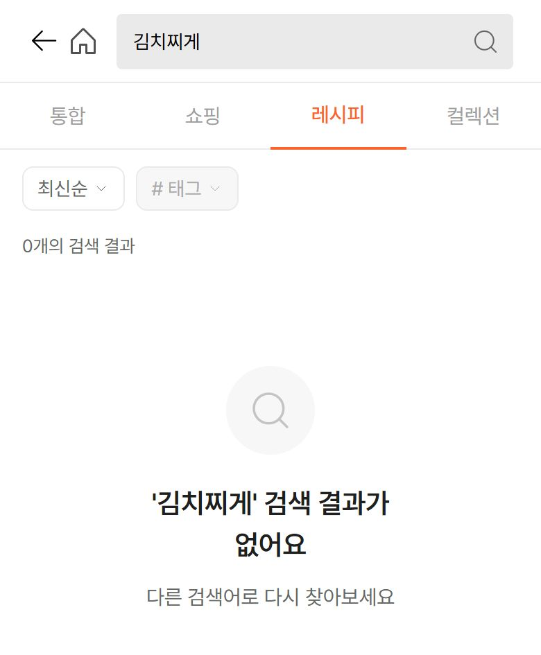 |
| 7 | 5 | 상 쇼핑 타임특가 문제타임특가 화면 세 탭(오늘 오픈·베스트·마감 임박)이 모두 비어 있습니다. 상품 조회가 422 「DB_QUERY_FAILED」로 실패하는데(/api/shop/time-sale/sections/337427/products), 화면에는 「오늘 시작한 타임특가 상품이 없습니다」로 나옵니다. 실패한 요청은 탭마다 3번씩 다시 보냅니다. 샵바이 전시 이벤트 SHOP_DISCOVERY_TOP·KIDS_TOP·LIFE_TOP도 404입니다. 제안서버 오류를 고쳐 주세요. 오류일 때는 「상품 없음」 대신 「불러오지 못했어요 · 다시 시도」를 보여 주세요. 404인 전시 칸은 샵바이에 만들지(레몬트리 작업), 앱에서 뺄지 알려 주세요. 내가 본 화면(시트에 안 들어감)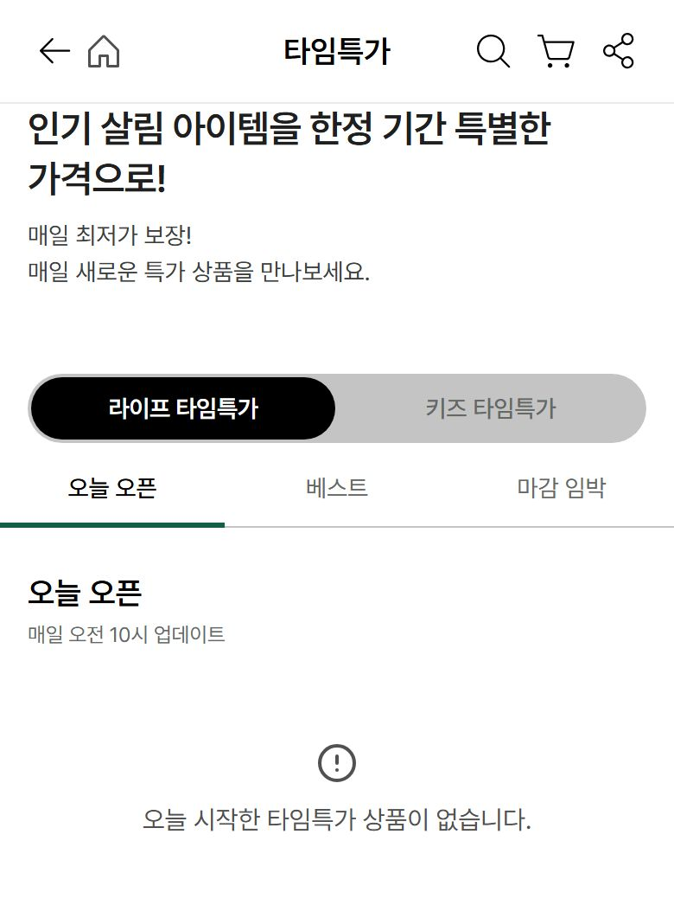 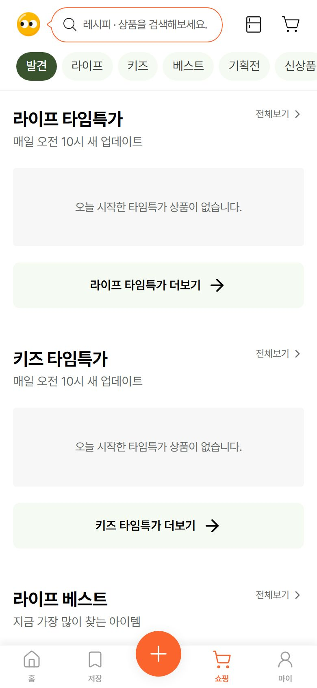 |
| 8 | 6 | 상 댓글·컬렉션 작성자 이름(실명) 문제댓글 작성자는 회원 이름(memberName)을 그대로 보여 주게 짜여 있고, 컬렉션 카드는 「@이름」(이름이 없으면 「@회원번호」)입니다. 쇼핑몰 설정이 「이름 필수 · 닉네임 미사용」이라 회원 조회 설정(통합 시나리오 47행)을 고치는 순간 댓글에 실명이 나갑니다. 제안회원 조회 설정을 고치기 전에 표시 이름 규칙을 넣어 주세요: 닉네임이 있으면 닉네임, 없으면 「김*희」처럼 가운데를 가린 이름. 회원번호는 어디에도 보이지 않게 해 주세요. 닉네임을 켜는 쇼핑몰 설정은 레몬트리가 하겠습니다. 레시피 → https://d1nmxpjaa8tlrm.cloudfront.net/recipes/616 댓글 작성자 칸 |
| 9 | 7 | 중 앱 전체(로그인 갱신 실패) 문제로그인 갱신이 실패하면 홈·레시피 상세·로그인 화면이 「Application error」로 멈춥니다. 같은 계정 두 화면이 동시에 갱신하면 한쪽이 401로 재현되고, 쿠키를 무효 값으로 바꿔도 재현됩니다. 앱에서는 흰 화면이라 다시 켜야 합니다. 제안① 갱신 요청이 동시에 나가지 않게 하나로 묶어 주세요(진행 중인 갱신을 기다렸다가 같은 결과 사용) ② 그래도 실패하면 오류 화면 대신 로그아웃하고 「다시 로그인해 주세요」와 함께 로그인 화면으로 보내 주세요. 내가 본 화면(시트에 안 들어감)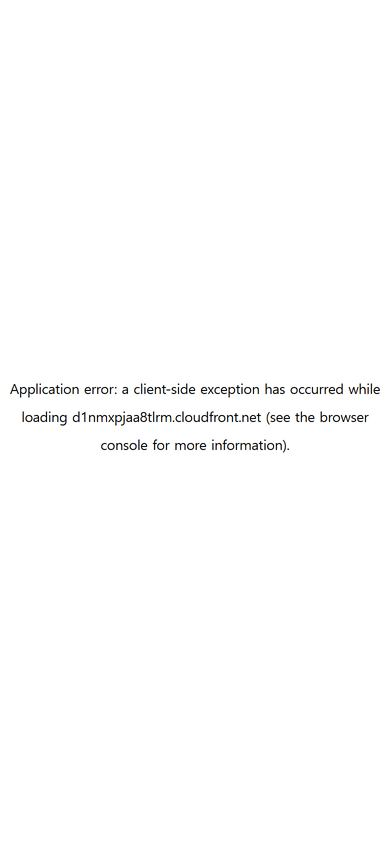 |
| 10 | 8 | 중 재료 이름(달걀/계란) |
| 11 | 9 | 중 레시피 상세(회원 복사본) 문제회원이 저장하면서 생긴 복사본도 로그인 없이 레시피 번호만 넣으면 열리고, 응답에 주인·처음 만든 회원번호가 들어 있습니다. 번호가 차례대로라 모두 훑어볼 수 있습니다. 제안복사본은 본인(과 관리자)만 열 수 있게 해 주세요. 공유가 필요하면 원본 주소로 공유하면 됩니다. 응답에서 회원번호 칸은 빼 주세요. 공개가 의도였다면 알려 주세요. 레시피 → https://d1nmxpjaa8tlrm.cloudfront.net/recipes/858 다른 회원 복사본이 로그인 없이 열림 |
| 12 | 10 | 중 컬렉션 공유 링크 미리보기 문제카톡 등이 읽는 원본 HTML에 컬렉션 정보가 없습니다. 미리보기 제목은 「JollyPot」뿐이고 사진·설명·탭 제목도 없습니다. 다른 화면은 모두 검색 노출 금지(noindex)인데 이 화면만 허용(index,follow)입니다. 제안서버에서 그릴 때 컬렉션 이름·대표 사진(첫 레시피 사진)·「레시피 n개」를 og 태그와 탭 제목에 넣어 주세요. 검색 노출 설정도 다른 화면과 같은 규칙으로 맞춰 주세요. 내가 본 화면(시트에 안 들어감) |
| 13 | 11 | 중 홈 「5분 완성」·「8월 제철 레시피」 |
| 14 | 12 | 중 홈 「이런 레시피는 어때요?」 시험 데이터 문제홈 추천에 「test」「QA 발행계정 확인용 테스트」 같은 시험 레시피가 나옵니다(레몬트리 QA 레시피도 섞여 있음). 제안관리자 레시피에 「시험용」 표시를 두고, 시험용은 홈·검색·추천에서 빠지게 해 주세요. 오픈 전에 표시만 하면 한 번에 정리됩니다. 레시피 → https://d1nmxpjaa8tlrm.cloudfront.net/recipes/817 시험 레시피 「test」 레시피 → https://d1nmxpjaa8tlrm.cloudfront.net/recipes/814 「QA 발행계정 확인용 테스트」 |
| 15 | 13 | 중 공통(순검정 #000) |
| 16 | 14 | 중 공통 바닥글·주황 버튼 글자 대비 |
| 17 | 15 | 중 공통(화면 확대 막힘) 문제화면 설정에 maximum-scale=1, user-scalable=no가 있어 두 손가락으로 확대가 안 됩니다. 제안두 값을 빼 주세요. 입력칸을 누를 때 화면이 커지는 게 걱정이면 입력칸 글자만 16px로 하면 됩니다. 내가 본 화면(시트에 안 들어감) |
| 18 | 16 | 중 공통(이름 없는 아이콘 버튼) |
| 19 | 17 | 중 레시피 본문 말투 문제AI가 정리한 레시피 말투가 섞여 있습니다. 원본 144개 중 119개가 한 레시피 안에서 섞이고, 조리 순서는 「~합니다」 356줄·「~한다」 280줄·「~하세요」 77줄입니다. 제안AI 정리 지시문에 말투를 고정해 주세요: 조리 순서는 「~해 주세요」, 설명·TIP은 「~해요」(앱 문구와 같은 말투). 기존 원본 144개도 한 번 다시 정리해 주세요. 레시피 → https://d1nmxpjaa8tlrm.cloudfront.net/recipes/316 조리 순서 말투 섞임 |
| 20 | 18 | 중 보안 응답 헤더 문제앱·관리자 응답에 기본 보안 헤더가 없습니다: HTTPS 강제(Strict-Transport-Security), 다른 사이트에 몰래 넣기 막기(X-Frame-Options 또는 CSP frame-ancestors), 파일 종류 추측 막기(X-Content-Type-Options). 제안운영 서버(nginx)에 세 헤더를 넣어 주세요. 관리자는 frame-ancestors 'none'으로 다른 사이트 안에 넣을 수 없게 해 주세요. 내가 본 화면(시트에 안 들어감) |
| 21 | 19 | 중 개발 서버 접속·연결 문제개발 서버가 누구나 접속할 수 있는데, 운영 쇼핑몰(샵바이 실회원·주문)과 분석 태그(GA G-75ZKPYWQ03·GTM)에 연결돼 있습니다. 개발 서버 가입은 실제 회원이 되고, QA 방문도 분석 숫자에 섞입니다. 제안개발 서버에 접속 제한(비밀번호 또는 IP)을 걸고, 분석 태그는 개발용 속성으로 나눠 주세요. 개발 서버 주문이 실제 결제로 이어지는지도 알려 주세요. 내가 본 화면(시트에 안 들어감) |
| 22 | 20 | 중 분석 이벤트 문제분석 태그에 기본 신호(화면 보기·머문 시간·검색 결과 보기)만 갑니다. 저장, 링크로 만들기, 컬렉션, 공유, 쿠팡 이동, 댓글 같은 핵심 행동 신호가 없습니다. 제안레몬트리가 이벤트 목록을 드리겠습니다. 오픈 전에 넣을 수 있는지와 일정을 알려 주세요. 기본 목록: recipe_save · link_create(성공/실패) · direct_create · collection_create · share · coupang_click · comment. 내가 본 화면(시트에 안 들어감) |
| 23 | 21 | 하 회원가입 정보 입력 |
| 24 | 22 | 하 홈 |
| 25 | 23 | 하 조리 순서 끌기 안내(화면 읽기) |
| 26 | 24 | 하 관리자 레시피 정보·큐레이션 표 |
| 27 | 25 | 하 상담 채널 문제상담 채널(channel.io) 시작 요청이 모든 화면에서 403으로 거절되고, 콘솔에 「ChannelIO script included twice.」가 뜹니다. 제안채널톡 설정에 개발·운영 주소가 허용돼 있는지 확인하고, 스크립트는 한 번만 넣어 주세요. 내가 본 화면(시트에 안 들어감) |
| 28 | 26 | 하 관리자 알림 조사 문제관리자 알림에 「라면을(를)」「#한끼식사 을(를)」「#계란장(으)로」처럼 괄호 조사가 보입니다. 제안받침을 보고 「을/를」「으로/로」 중 하나만 붙여 주세요(받침 판별 함수 하나로 공통 처리). 내가 본 화면(시트에 안 들어감) |
| 29 | 27 | 하 링크로 레시피 만들기(인스타) |
| 30 | 28 | 하 레시피 썸네일(유튜브 주소 직접 사용) 문제공개 레시피 227개 중 123개의 썸네일이 유튜브 서버(i.ytimg.com) 주소를 그대로 씁니다. 지금 깨진 것은 0개지만, 영상이 지워지면 카드가 빈칸이 됩니다. 제안등록할 때 썸네일을 우리 저장소로 복사해 쓰고, 혹시 못 불러오면 대체 그림을 보여 주세요. 내가 본 화면(시트에 안 들어감) |
| 31 | 29 | 하 홈·상품 공유 미리보기 문제홈은 미리보기 사진(og:image)이 없고, 상품 페이지 사진 주소는 https: 없이 「//shopby-images…」로 시작합니다. 브라우저 위쪽 색(theme-color)도 비어 있습니다. 제안홈에 대표 미리보기 그림을 넣고, 상품 사진 주소 앞에 https:를 붙여 주세요. theme-color는 흰색(#FFFFFF)으로 넣어 주세요. 내가 본 화면(시트에 안 들어감) |
| 32 | 30 | 하 레시피 상세 태그 문제레시피 상세 태그가 파란 글자 링크(#3276AE)로 보입니다. 제안가이드 태그 모양으로 바꿔 주세요: 흰 알약 + 1px #CCCFD4 테두리 + 잉크 글자, # 기호만 딥그린 #145F48, 높이 36px. 레시피 → https://d1nmxpjaa8tlrm.cloudfront.net/recipes/616 파란 글자 태그 |
| 33 | 31 | 하 레시피 상세 영상 시각 칩·저장 버튼 문제단계별 영상 시각 칩이 12px·굵기 400·둥글기 100px이고, 저장 버튼은 테두리 #C4C4C4·둥글기 12px입니다. 제안가이드 값으로 맞춰 주세요: 시각 칩 11px·600·둥글기 10px, 저장 버튼 테두리 #CCCFD4·둥글기 14px. 레시피 → https://d1nmxpjaa8tlrm.cloudfront.net/recipes/616 시각 칩·[저장] 버튼 |
| 34 | 32 | 하 제목 굵기 700 |
| 35 | 33 | 하 가이드 밖 색 |
| 36 | 34 | 하 바닥글 저작권 줄 |
| 37 | 35 | 하 공통(누르는 곳 크기) 문제누르는 곳이 44×44px보다 작은 곳이 로그인 상태 45개 화면 합계 772곳입니다(북마크·재료 구매·추천 점·헤더 아이콘 등). 제안아이콘 크기는 그대로 두고 누르는 영역만 44×44px로 넓혀 주세요. 내가 본 화면(시트에 안 들어감) |
| 38 | 36 | 하 공통(작은 글자) |
| 39 | 37 | 하 선택 상자 화면 읽기 안내 문제회원 앱의 선택 상자가 화면 읽기 기능에 「8 results available」「option , selected」처럼 영어로 안내합니다. 제안선택 상자 안내 문구를 한국어로 넣어 주세요(예: 「결과 8개」, 「선택됨」). 내가 본 화면(시트에 안 들어감) |
| 40 | 38 | 하 알림·오류 화면 문구 끝맺음 |
| 41 | 39 | 하 옛 이름 「스크랩북」 2곳 |
| 42 | 40 | 하 불필요한 요청 문제로그인 안 한 상태에서 /profile 조회가 400, 콘솔에 「Shopby Statistics Error」가 찍히고, 로그인한 회원도 비회원 장바구니(guest/cart) 요청을 보냅니다. 제안로그인했을 때만 /profile을 부르고, 로그인 회원은 회원 장바구니만 쓰게 해 주세요. 통계 오류는 원인을 알려 주세요. 내가 본 화면(시트에 안 들어감) |
| 43 | 41 | 하 관리자 없는 주소(404) |
| 44 | 42 | 하 관리자 탭 제목 문제직접 등록·캐시 관리 화면은 탭 제목에 「| JollyPot 관리자」가 없습니다. 제안다른 화면처럼 「○○ | JollyPot 관리자」로 맞춰 주세요. 내가 본 화면(시트에 안 들어감) |
| 45 | 43 | 하 컬렉션 담기 저장 방식 문제컬렉션에 담을 때 레시피 번호 목록 전체를 보내 덮어씁니다(PATCH recipeIds). 두 기기에서 거의 동시에 담으면 먼저 담은 것이 사라질 수 있습니다(요청 모양으로 판단, 동시 재현은 안 함). 제안담기는 「추가」 요청(레시피 번호 하나), 빼기는 「빼기」 요청으로 나눠 주세요. 내가 본 화면(시트에 안 들어감) |
| 46 | 44 | 하 마이페이지 「나의 레시피」 |
| 47 | 45 | 하 앱 공용 토큰 문제앱 스크립트 안에 모든 요청에 붙이는 공용 토큰(JWT)이 들어 있고 만료가 없습니다. 사실상 공개된 값입니다. 제안이 토큰만으로 부를 수 있는 기능을 점검해(버그 시트 No 2·버그 시트 No 9 조회 등) 회원 정보가 나가지 않게 해 주세요. 운영은 개발과 다른 값을 쓰고, 바꿀 수 있게 해 주세요. 내가 본 화면(시트에 안 들어감) |
| 48 | 46 | 하 검색 노출 설정(운영 전환 때) 문제모든 화면이 기본으로 검색 노출 금지(noindex)이고 컬렉션 공유 화면만 허용입니다. 대표 주소(canonical)·og:url은 개발 주소이고 sitemap.xml은 없습니다. 제안대표 주소를 환경 설정으로 바꿔 운영에서는 jollypot.co.kr이 들어가게 해 주세요. 검색 노출 범위(레시피 상세 허용 여부)는 레몬트리가 정해 드리고, 허용하면 공개 레시피로 sitemap.xml을 만들어 주세요. 내가 본 화면(시트에 안 들어감) |
| 49 | 47 | 하 회원이 올린 사진·로고 문제회원이 올린 사진을 줄이지 않고 원본 그대로 저장·표시합니다(예: 534×339 PNG가 317KB, 캐시 설정 없음). 상단 로고는 107×25px PNG라 고해상도 휴대폰에서 흐릿할 수 있습니다. 제안올릴 때 화면 크기 사본(WebP, 긴 변 1080px 등)을 만들어 쓰고 긴 캐시를 걸어 주세요. 로고는 SVG로 바꿔 주세요. 레시피 → https://d1nmxpjaa8tlrm.cloudfront.net/recipes/427 올린 사진 원본 그대로 내가 본 화면(시트에 안 들어감) |
| 50 | 48 | 하 같은 요청 반복 문제로그인 없이 홈을 열면 같은 주소 요청 4개(홈·최근·카테고리·최신 레시피)가 각각 3번 이상, 레시피 상세는 4개가 2번씩 갑니다(모두 200). 제안한 화면에서 같은 요청은 한 번만 부르도록 캐시·요청 키를 정리해 주세요. 내가 본 화면(시트에 안 들어감) |
| 51 | 49 | 하 개발용 콘솔 기록 문제요청마다 콘솔에 「[API] GET … | Request」 개발용 기록을 남깁니다. 레시피 상세 한 번에 51줄입니다. 제안운영 설정에서는 이 기록을 꺼 주세요. 내가 본 화면(시트에 안 들어감) |
AF9776344)으로 나갑니다. 우리 아이디인지, 졸리팟 상품이 있는 재료는 우리 상품으로 보낼지 정해 주세요.